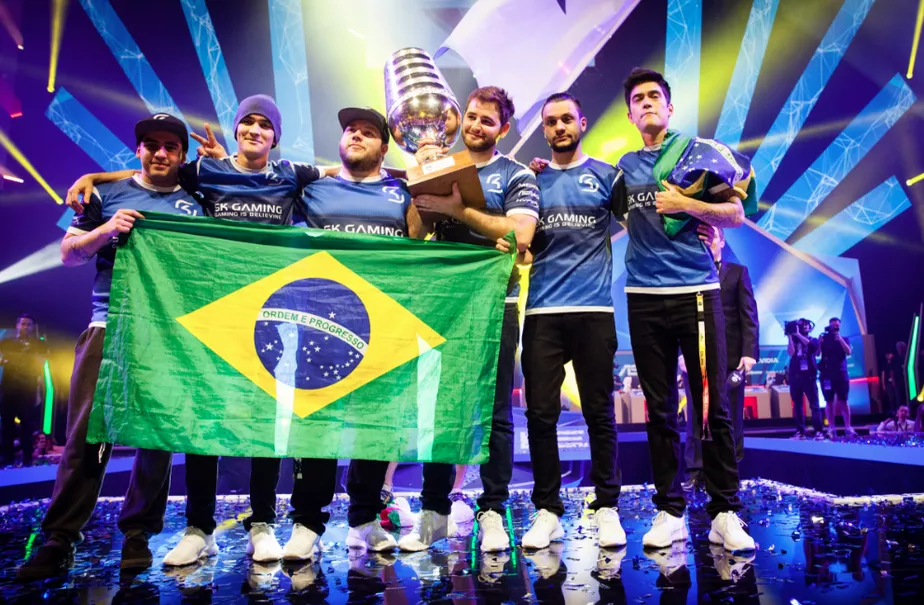

О нас
Узнайте историю нашей команды и познакомьтесь с легендарными составами-членами Зала Славы SK Gaming
Ⓒ - ESL One, Colonge, 2016
Наша история
Впервые, команда SK Gaming показала себя еще во времена старой доброй CS 1.6. В период с 2002 по 2011, команда показывала неплохие результаты занимая призовые места в различных турнирах и соревнованиях. Когда сообщество кс перешло на CS:GO площадку, в октябре 2013 года был подписан шведский ростер, игравший ранее за Lemondogs. С той поры команда потерпела значительные изменения в составе. Поскольку команда перестала показывать достойную игру, после полосы длительных неудач и проигрышей, руководство команды приняло решение распустить состав SK Gaming CS:GO. В конце мая 2015 года был подписан датский ростер. Существование его продлилось до июня 2016 года. С 1 июня 2016 года SK Gaming начали жизнь с нового листа. Собрав коллектив из бразильских игроков ранее выступавших под названием Luminosity Gaming, которые уже показывали хорошую профессиональную игру, команда снова ожила и стала занимать одно из лидирующих мест в кс го лиге.
Действующий состав
*Статистика K/D-рейтинга, хэдшотов и карт, учитывая всю историю выступления игрока в CS:GO
| Страна | Игрок | Возраст | K/D-рейтинг | Хедшоты | Сыграно карт |
|---|---|---|---|---|---|
 |
Габриэль «FalleN» Толедо | 27 | 1.07 | 44.0 | 67 |
|
Фернандо «fer» Альваренга | 25 | 1.18 | 44.0 | 66 |
|
Марсело «coldzera» Давид | 22 | 1.29 | 47.8 | 66 |
|
Эпитасио «TACO» де Мело | 22 | 0.94 | 45.1 | 66 |
|
Жоао «felps» Васконселлос | 20 | 1.07 | 45.6 | 66 |
Основные достижения команды
-
2 место - Subaru Invitational 2017 - $5 000;
-
1 место - Intel Extreme Master XII - $100 000;
-
1 место - cs_summit - $63 750;
-
2 место - DreamHack Masters Las Vegas 2017 - $100 000;
-
3 место - The ELEAGUE Major 2017 - $70 000;
-
3 место - EPICENTER: Moscow - $40 000;
-
3 место - Esports Championship Series Season 2 - $65 000;
-
3 место - ELEAGUE Season 2 - $60 000;
-
2 место - Intel Extreme Master Season XI Oakland - $53 000;
-
2 место - ESL One New York 2016 - $25 000;
-
3 место - ESL One New York 2016 - $25 000;
-
3 место - iBUYPOWER Invitational 2016 - $1000;